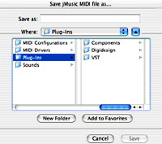

|
|||||||
Graphical User Interface - File Dialogs
While the previous simple GUI classes allowed the specification of a
file name, they did not allow specification of a file path -
the file was always in the same folder (directory) as the class file.
This demo implements Java's FileDialog routines to utilise the OS's native
load and save prompts, which is more flexible than previous examples -
and more cool looking :)
This is what the GUI will look similar to this.

Let's have a closer look.
import java.awt.*; |
These lines identify all the packages required for this class, both standard java and jMusic ones.
public class SimpleGUI_f extends Frame implements ActionListener, JMC{
//attributes |
After instantiating the class and indicating that it will be a GUI which builds upon (extends) the java Frame class, a class variable 'fd' is declared.
It is an java FileDialog and will be used by a number of methods, which is why it needs to be a class variable.
The main method simply creates an instance of this class by calling the constructor.
The constructor method is shown in full. It opens a window, creates and adds a Compose button, then makes the window visable.
//////////// // Deal with the button click //////////// |
This action listener method catches a mouse click on the 'compose' button which had an action command 'create' registered above.
Once detected, the file dialog is opened in SAVE mode and made visible with the 'show' command.
Once the user types in a name for the MIDI file and chooses a saving location, these are printed to the standard output just for confirmation.
Finally, the makeMusic method is called.
///////////// |
This method does the now familiar work of creating a jMusic score. In this case a 120 note melody of random pitches (not very musical but...).
The smf.write method call uses the file path and file name from the file dialog (fd).
The melody is also saved as a jm file called SimpleGUI.jm then the standard output prints 'Done'.